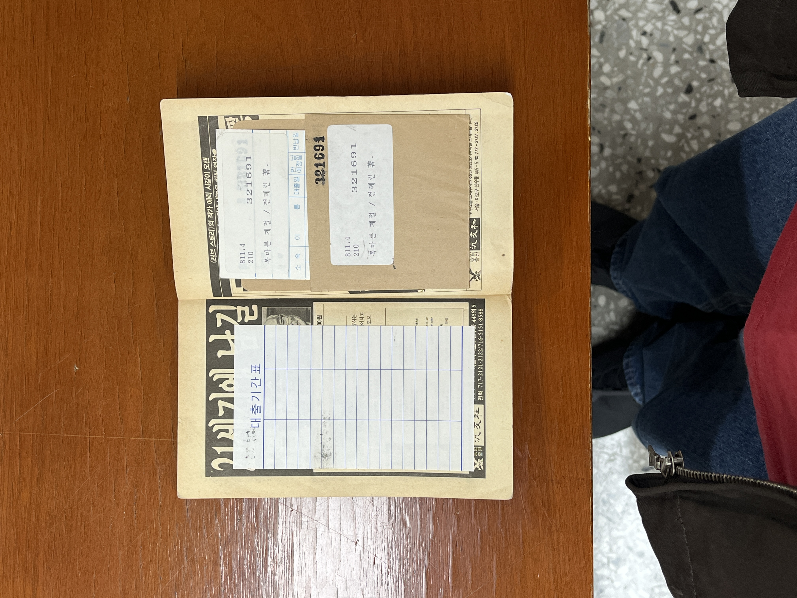
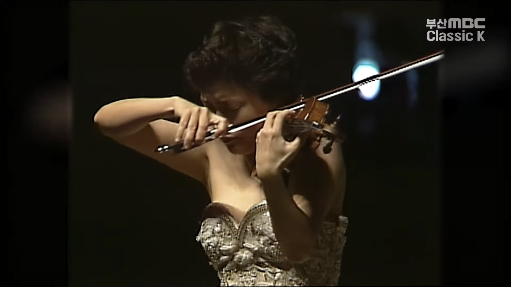
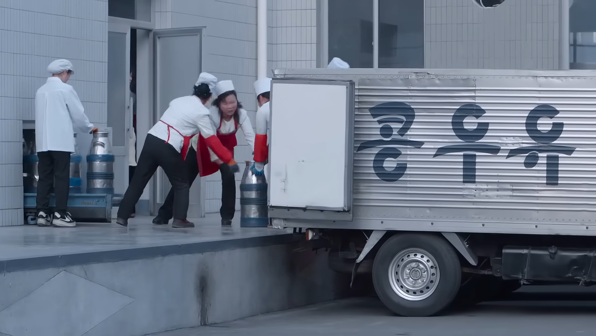
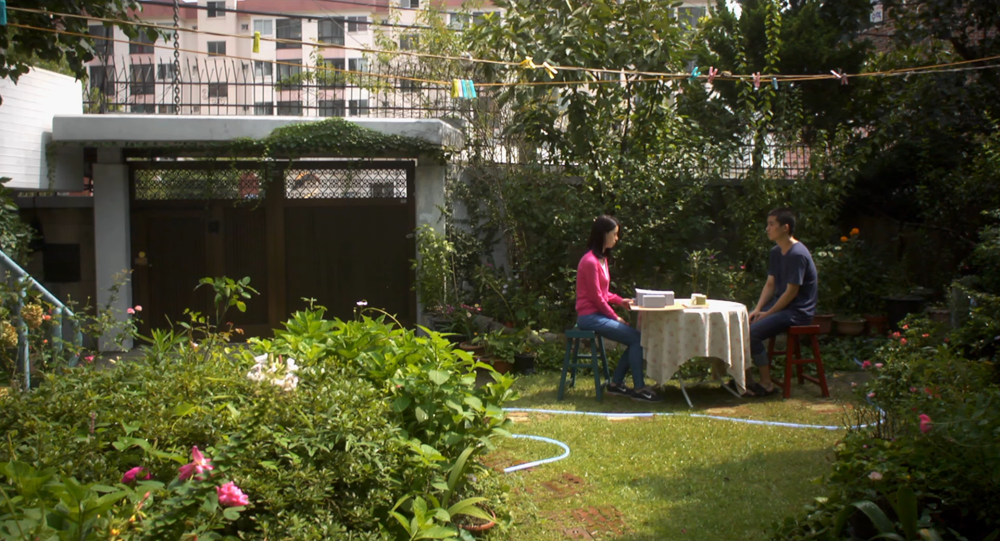
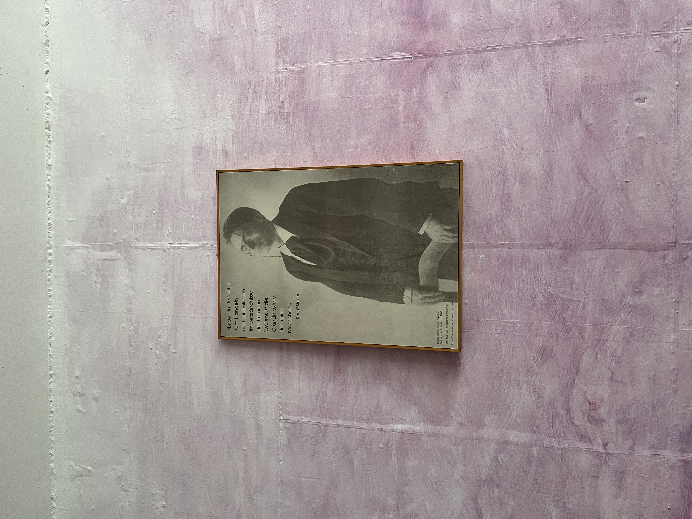
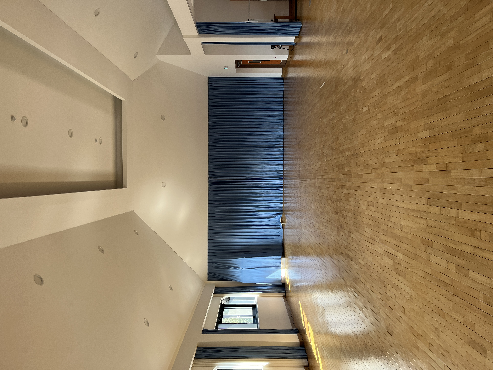
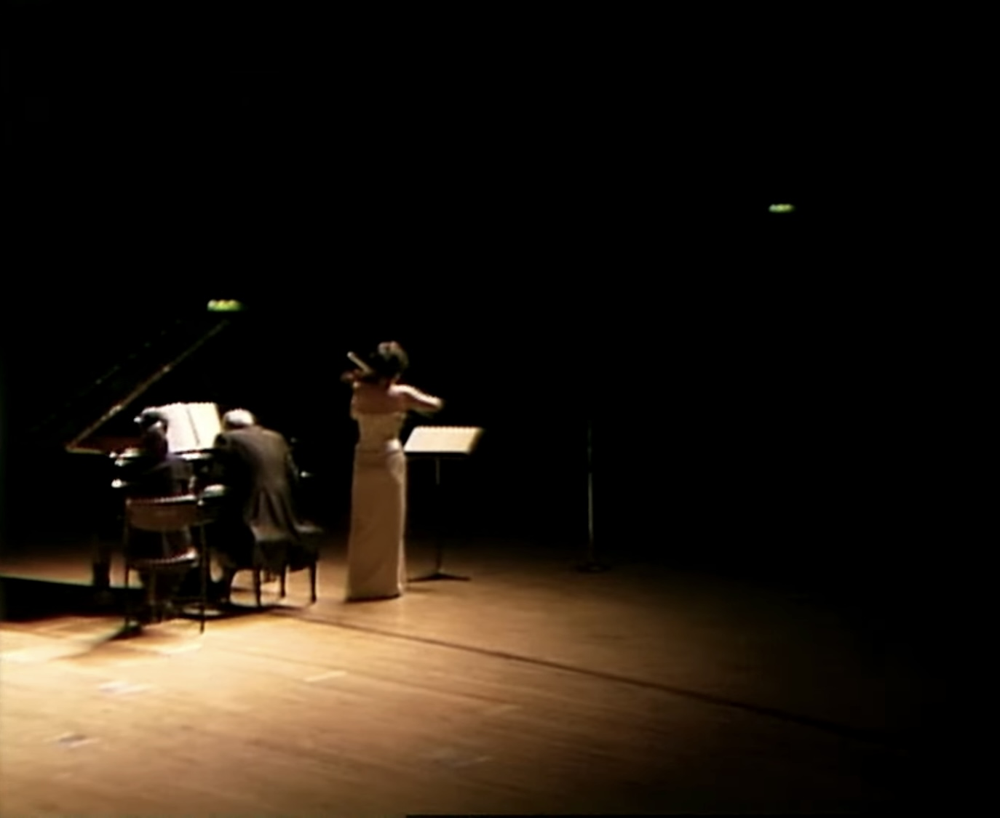
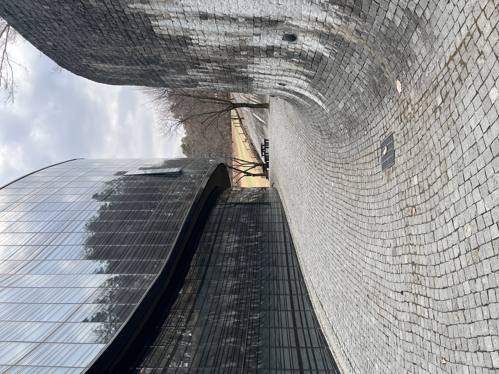

목마른 계절의 비올라
2026.02

목마른 계절 대출기록 카드




올 여름 슈바빙에 같이 갈 친구를 구하다..

동렬이와 학교 교무실에서

증축한 오이리트미실을 처음 가봤다

2월에는 유난히 클래식 음악만을 들었다. 1월 말 공연이 끝나고의 여파이니라..
특히 정경화의 브람스 바이올린 소나타 3번 2악장을
반복해서 들었다. 95년 부산에서의 리사이틀 영상이 그것이다.
빠른 것보다 느린게 좋고, 높은 음보다 낮은 음이 좋다.
3학년 때
바이올린이 아닌 첼로를 고른 나.
바이올린에서 비올라 소리가 나기를 원하는 나.

오래 사는 집